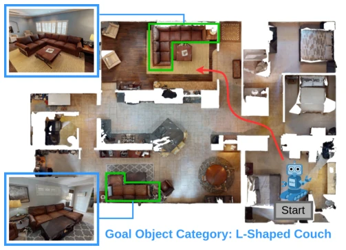
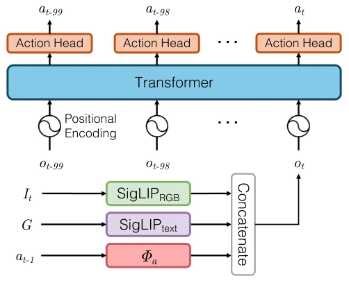
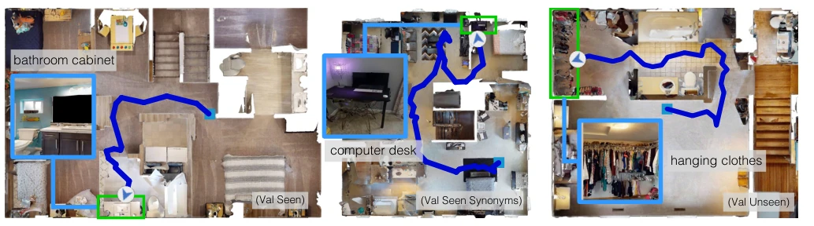
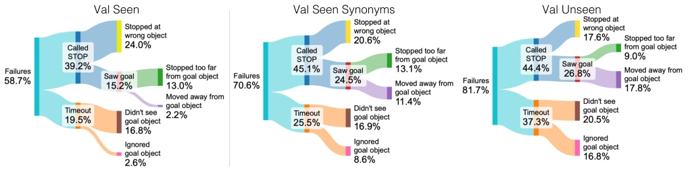

This HM3D-OVON paper finally liberates ObjectNav from the fixed question bank of "finding sofas". The dataset utilizes real scanned scenes and 379 categories, significantly outperforming older benchmarks with only 6-21 categories. However, do not celebrate too soon; pure end-to-end models (DAgRL) still fail on unseen categories, requiring an external OWLv2 detector (DAgRL+OD) to surpass the modular method VLFM. What does this indicate? It indicates that current end-to-end strategies have not yet mastered true semantic generalization, falling short of "understanding human language". Furthermore, they found prefix exploration outperforms shortest path, directly contradicting SPOC [15], likely due to differences in simulation environment complexity. In summary, while the dataset is robust, algorithms still rely on "cheating" (detectors) to achieve high scores. Pure end-to-end remains fragile on open vocabulary tasks, exposing a fundamental shortcoming in the semantic understanding of current end-to-end navigation.
Existing ObjectNav benchmarks (e.g., HM3D [20], MP3D [17]) are typically restricted to 6-21 fixed categories and predominantly utilize synthetic scenes (ProcTHOR [18]), resulting in poor generalization. Real robots require handling targets described via free language (e.g., "L-shaped sofa"), rather than fixed labels. HM3D-OVON aims to address this open vocabulary problem by testing model generalization capabilities through real scans and fine-grained semantic evaluation (SEEN/SYNONYMS/UNSEEN). Prior work such as SPOC [15] proposed imitation learning but did not sufficiently verify robustness under open vocabulary conditions. Furthermore, strategies trained in synthetic scenes perform poorly in real environments, necessitating benchmarks based on real scanned data to advance embodied intelligence. Existing methods struggle to handle unseen categories, limiting practical deployment.

Fig. 1: We study the Open-Vocabulary ObjectNav (OVON) task, which involves an agent tasked with navigating to object goals in an open-set, specified through language. In the above example, an agent is tasked with navigating to an ‘L-Shaped Couch’.
The dataset is based on HM3DSem [2], comprising 181 real 3D scanned scenes and 379 object categories. Evaluation is divided into three groups: VAL SEEN (seen during training), VAL SEEN SYNONYMS (semantically similar), and VAL UNSEEN (semantically unrelated). The strategy architecture employs SigLIP to encode vision and text, combined with a Transformer to process 100-step history. Training methods encompass BC, DAgger, RL, and their combinations (BCRL, DAgRL). The DAgger implementation supports online expert annotation, addressing offline data diversity issues; the expert strategy requires only 1ms/step, ensuring training efficiency. The modular baseline VLFM [12] utilizes explicit maps and an OWLv2 [14] detector. The proposed DAgRL+OD combines DAgRL exploration with detector localization, achieving complementary advantages between end-to-end and modular approaches. The RL stage employs sparse rewards to encourage approaching the target. Additionally, the authors compared RNN and Transformer, finding that Transformer performs better in encoding temporal information, thereby enhancing the strategy's generalization capability.

Fig. 2: Our OVON policy encodes the current visual observation It, the goal object category G, and the previous action at−1 to form observation embedding ot. At each step, the embedding sequence for the past 100 time steps is fed into a transformer, which uses an action head to sample an action at.
On SR and SPL metrics, DAgRL is the best end-to-end method, but its generalization is inferior to VLFM. DAgRL+OD surpasses VLFM across all splits. Ablation experiments demonstrate that Transformer outperforms RNN, and prefix exploration outperforms shortest path (contrary to the conclusion of SPOC [15]). Noise tests indicate that DAgRL+OD is more robust to odometry and actuation noise, as it does not rely on precise maps. Failure analysis reveals an increase in timeout and target ignore phenomena under unseen categories. Specifically, DAgRL's success rate drops by 11.9-23.0% on unseen categories, whereas VLFM remains stable. DAgRL+OD bridges this gap by introducing a detector, achieving significant SR improvements on unseen categories. VLFM performance drops significantly under noise, while DAgRL+OD is almost unaffected.

Fig. 3: Examples of successes of our DAgRL policy for each evaluation split. DAgRL can efficiently explore the environment, avoid obstacles, and stop in front of the goal object when it is spotted, using only RGB observations. Videos can be found at naoki.io/ovon.

Fig. 4: Failure analysis of DAgRL. As the goal object categories become less similar to those seen in training (i.e., VAL SEEN, VAL UNSEEN), the agent more frequently fails from timeouts (never calling STOP) and more frequently ignores the goal object.